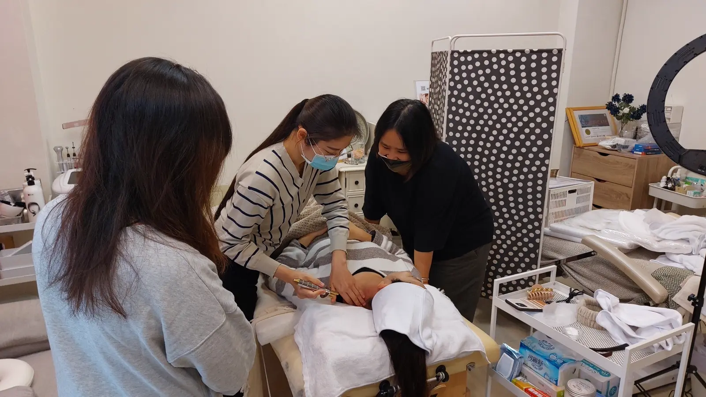

The Bojin Journal · The method
Why the Order Matters: Warm, Work, Then Finish Down the Neck

A student once told me her results never lasted. She was doing good work on her cheeks and jaw, careful pressure, nice technique, and by mid-afternoon her face looked the way it had that morning. I asked her one question: what do you do last? She said she just stops when the tight parts feel better. There it was. She was doing two-thirds of a session and wondering why it behaved like two-thirds.
The order of a bojin session is not decoration. It runs warm, work, drain, and each phase sets up the next. One thing to be clear about from the start: warming means warming up your own skin with a few light passes, the way you warm up muscles before exercise. Nothing about the tool is ever heated. Here is the whole idea before the detail: you warm up the skin so the tool can reach without force, you work to ease the tension, and you drain so what you loosened has somewhere to go. Skip a phase and you feel the gap, most of all when you skip the last one.
First, warm up the skin: so the tool can reach without force
Cold, un-prepared skin resists a tool. If you go straight to the deep work on a face that has not been warmed, you press harder and harder trying to feel something, and pressing harder is where marks and soreness come from. A minute of flat, gliding passes over the area changes everything that follows. It brings warmth and a little more slip, softens the surface, and lets the working strokes reach the tension at a comfortable pressure instead of a forced one. Warming is not a nice extra. It is what makes the gentle version of the method possible.
Second, work: the release, now that you can reach it
Only once an area is warm does the real work land well. This is where the rest of the method comes in: the working angle that meets the tension rather than skimming it, the rounded tip settling on the tight spots, the comfortable pressure that reaches without hurting. This is the middle of the session and where you spend most of your minutes. Because you warmed first, you can stay gentle here and still reach what you came for.
Third, drain: the step almost everyone shortchanges
This is the one my student was missing, and it is the one that decides whether your work holds. The working phase loosens tension and stirs up settled fluid. That fluid does not vanish on its own. It needs a route out, and the route runs down the neck. If you stop the moment the tight parts feel better, everything you moved simply settles back where it started over the next hour or two. That is the exact pattern of a face that looks good after a session and puffy again by afternoon.
Think of the working phase as loosening what is stuck, and the neck finish as carrying it away. One without the other is half a job. The neck is the drain of the face, so every session, no matter how short, ends with slow downward sweeps from the jaw along the sides of the neck. This single habit is the most common difference between results that fade in an hour and results that hold through the day.
The three phases, start to finish
Here is the frame on a whole face. Use a little oil or your usual moisturizer for glide, and keep every stroke comfortable.
- Warm the area first A minute of flat, gliding passes over the part of the face you plan to work, using the broad edge. This brings warmth and slip so the tool can reach the tension later without force.
- Work the tension Now do the release work, tilting the edge to the working angle to meet the tension, and using the rounded tip on any tight spots. This is the middle of the session and where you spend most of your time.
- Finish down the neck, every time Sweep slowly from the jaw down the sides of the neck with the broad edge, several passes, to give everything you loosened a route out. Always end here, or the effect resettles.
Within that frame you have all the freedom you want. Spend longer on the jaw one day and the brow the next, follow where your face feels tight. What does not move is the shape around it: warm to open, work to ease, drain to carry away. Keep the frame and the same five minutes simply gives you more.
An honest note
Order will not add anything your face cannot already do; it just stops you from wasting the effort you are already putting in. The effect is still gentle and temporary, and it still builds with consistency. What the sequence does is help each session hold a little longer than the last, which over weeks is most of what people mean when they say it is "working."
Warm, work, drain. Your student self might stop when the tight parts feel better. Do the last third anyway. That is the part that follows you into the afternoon.
Quick answers
Why do you always finish down the neck?
The working part of a session loosens tension and moves settled fluid. The neck is the route that fluid takes to leave. If you stop before sweeping down the neck, what you moved simply resettles where it was, which is why a session can look good for an hour and then fade. The neck finish is what lets the result hold a little longer.
Can I skip the warm-up if I'm short on time?
Better to shorten everything than to skip the warm-up. Cold, unprepared tissue resists the tool, so you end up pressing harder to feel anything, which is where marks and soreness come from. Even thirty seconds of flat, gliding passes changes how the rest of the session lands. Trim the middle if you must, but keep a brief warm and a brief neck finish.
Does the direction of the strokes matter too?
Yes. As a rule you work from the center of the face outward toward the ears and hairline, and you carry everything downward off the jaw and along the neck at the end. That general flow supports the lift you want during the work and gives fluid a downhill route out during the finish.
Is there a single right order, or can I improvise?
The three phases are fixed: warm, work, drain. Within them you have freedom to spend more time wherever your face needs it on a given day. Think of it as a reliable frame, not a rigid script. Keep the frame and the same five minutes gives you more.
See the whole sequence in one pass
Warm, work, and the neck finish make the most sense when you watch them flow into each other. My free 3-minute video runs the full order on a real face, so you can copy the shape of a session, not just the strokes.
Watch the free 3-min videoYu-Ting Lan is a Taiwan-based international bojin instructor and the founder of Héhé Studio. She has taught her bojin method to more than a thousand students, from complete beginners to grandmothers, across Taiwan, Hong Kong, and Malaysia.